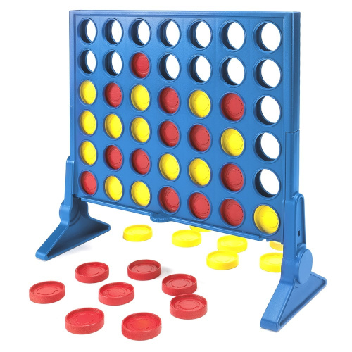

Opgave Vier-op-een-rij
Inhoud
Opgave Vier-op-een-rij¶
Deze opgave gaat over het spelletje vier-op-een-rij.

Het spel wordt gespeeld met 2 spelers: rood en geel.
Om de beurt werpen de spelers een steen in een rek, dat bestaat uit 7 kolommen die elk 6 stenen kunnen bevatten.
Een steen valt naar beneden, totdat deze niet meer verder kan vallen (als er al stenen in een kolom aanwezig zijn). Uiteraard kan een speler alleen een steen in een kolom gooien die nog niet volledig gevuld is.
De speler die als eerste vier stenen op een rij heeft, heeft gewonnen. De rij kan horizontaal, verticaal en diagonaal zijn in alle mogelijke richtingen.
Het spel is afgelopen als een speler vier op een rij heeft, of als het rek helemaal vol is.
Klasse Board¶
De klasse Board representeert het rek.
Dit is een begin van deze klasse:
public class Board {
public static final int NONE = 0;
public static final int PLAYER1 = 1;
public static final int PLAYER2 = 2;
public static final int NUMBER_OF_COLS = 8;
public static final int NUMBER_OF_ROWS = 8;
private final int[][] board;
public Board() {
board=new int[NUMBER_OF_COLS][NUMBER_OF_ROWS];
}
public Board(Board board) {
this();
// De array wordt gekopiëerd, om onbedoelde wijzigingen in de array van het argument te voorkomen.
for(int col=0; col<NUMBER_OF_COLS; col++) {
for(int row=0; row<NUMBER_OF_ROWS; row++) {
this.board[col][row]=board.get(col, row);
}
}
}
public Board(Board board, int player, int column) {
this(board);
if (isValidMove(column)) {
// Verander de array board, zodat een steen van player in column terecht komt.
// ..(deze code dient te worden aangevuld)
} else {
throw new IllegalStateException("Invalid move");
}
}
public Board doMove(int player, int column) {
return new Board(this, player, column);
}
Deze klasse dient immutable te zijn. Dit betekent dat als een speler een zet doet, dat er een nieuw bord wordt gemaakt op basis van een bestaand bord.
De aanpassing aan de array naar aanleiding van een zet wordt gedaan in de constructor.
Nog te implementeren methodes:
public int get(int column, int row) // getter voor een steen op bepaalde positie
public boolean isValidMove(int column) // kan in de kolom een steen worden geworpen?
public boolean isFinished() // is het spel afgelopen?
public boolean isWinner(int player) // heeft player gewonnen?
Maak deze klasse af.
Hoewel het niet om veel methodes gaat, is het niet heel eenvoudig. Vooral het correct bepalen van de winnaar. Daarom is uitgebreid testen belangrijk.
Klasse Board testen¶
Om de klasse Board te testen, kan het handig zijn om het bord weer te geven.
Dat is mogelijk met klasse DisplayBoard:
public class DisplayBoard {
public char boardChar(int player) {
if (player==Board.PLAYER1) {
return 'O';
}
if (player==Board.PLAYER2) {
return 'X';
}
return '.';
}
public void displayBoard(Board board) {
System.out.println();
for(int row=0; row<Board.NUMBER_OF_ROWS; row++) {
for(int col=0; col<Board.NUMBER_OF_COLS; col++) {
System.out.print(boardChar(board.get(col,row)));
}
System.out.println();
}
}
}
Voorbeeld van een test:
Board board = new Board();
DisplayBoard displayBoard = new DisplayBoard();
displayBoard.displayBoard(board);
board=board.doMove(Board.PLAYER1, 1);
board=board.doMove(Board.PLAYER2, 2);
board=board.doMove(Board.PLAYER1, 1);
board=board.doMove(Board.PLAYER2, 2);
board=board.doMove(Board.PLAYER1, 1);
board=board.doMove(Board.PLAYER2, 2);
board=board.doMove(Board.PLAYER1, 1);
System.out.println();
displayBoard.displayBoard(board);
System.out.println(board.isWinner(Board.PLAYER1));
De verwachte uitvoer:
.......
.......
.O.....
.OX....
.OX....
.OX....
true
Klasse Game¶
De klasse Game zorgt ervoor dat er daadwerkelijk een spel wordt gespeeld.
Klasse Game:
import java.util.Scanner;
public class Game {
private Board currentBoard;
private int currentPlayer;
// User-interface
private DisplayBoard displayBoard = new DisplayBoard();
private Scanner scanner = new Scanner(System.in);
private void finishTurn() {
if (currentPlayer==Board.PLAYER1) {
currentPlayer=Board.PLAYER2;
} else if (currentPlayer==Board.PLAYER2) {
currentPlayer=Board.PLAYER1;
} else {
throw new IllegalStateException("Invalid current player");
}
}
private void doMove(int column) {
currentBoard=currentBoard.doMove(currentPlayer, column);
finishTurn();
displayBoard.displayBoard(currentBoard);
}
private void doTurnComputer() {
int column=0;
while(!currentBoard.isValidMove(column)) { column++; }
if (column<Board.NUMBER_OF_COLS) {
doMove(column);
} else {
throw new IllegalStateException("No valid move possible");
}
}
private void doTurnHuman() {
System.out.print("Jij bent aan de beurt. In welke kolom wil je de steen werpen? (1-"+Board. NUMBER_OF_COLS+")");
int column = Integer.parseInt(scanner.nextLine().trim())-1;
doMove(column);
}
public void runGame() {
currentBoard=new Board();
currentPlayer=Board.PLAYER1;
while(!currentBoard.isFinished()) {
if (currentPlayer==Board.PLAYER1) {
doTurnComputer();
} else {
doTurnHuman();
}
}
if (currentBoard.isWinner(Board.PLAYER1)) {
System.out.println("Speler 1 (COMPUTER) heeft gewonnen!");
} else if (currentBoard.isWinner(Board.PLAYER2)) {
System.out.println("Speler 2 (MENS) heeft gewonnen!");
} else {
System.out.println("Er is geen winnaar.");
}
}
}
Neem de klasse over en test deze door in de main-methode de volgende code te plaatsen:
Game game = new Game();
game.runGame();
Test of het spel te spelen valt. Dit is sterk afhankelijk van het correct functioneren van klasse Board.
Klasse Game verbeteren¶
Er valt het nodige te verbeteren aan klasse game.
De methode doTurnComputer is heel minimaal uitgevoerd: In de meest linker kolom waar ruimte is, wordt een steen geworpen.
Zelfs een willekeurige beschikbare kolom kiezen, is al een verbetering. Een andere grote verbetering is nagaan of er een kolom is die winst oplevert.
Verder bevat Game code voor weergave en gebruikers-invoer. Dit wordt verbeterd door het observer pattern toe te lassen.
Observer pattern toepassen¶
Refactor de code zo dat het bord wordt weergegeven met behulp van het observer pattern.
Game wordt het subject (of observable).
Het is de bedoeling dat de huidige instantie van Board bij de observers terecht komt, als argument van de methode update. Dit kan gerealiseerd worden door de methode notifyObservers een parameter te geven, waarmee het object kan worden meegegeven.
Een andere mogelijkheid is gebruik maken van interface en abstract klasse java.util.Observer en java.util.Observable. De methode notifyObservers van de standaard meegeleverde java.util.Observable biedt de mogelijkheid om een extra object mee te geven. Zie hiervoor de Oracle documentatie.
Maak een observer ViewConsole die de code bevat uit klasse DisplayBoard.
De klasse DisplayBoard is hierdoor overbodig geworden. Alle verwijzingen naar DisplayBoard in Game dienen verwijderd worden.
Grafische observer¶
Het observer pattern is erg geschikt voor grafische gebruikers interfaces.
Maak een observer voor grafische weergave ViewGraphics.
Daarbij kun je gebruik maken van de Standard Libraries van Robert Sedgewick en Kevin Wayne, https://introcs.cs.princeton.edu/java/stdlib/
Dit is een begin:
// In de constructor:
StdDraw.setScale(0, Math.max(Board.NUMBER_OF_COLS,Board.NUMBER_OF_ROWS)*40);
StdDraw.clear(Color.BLUE);
// In de update-methode:
for(int col=0; col<Board.NUMBER_OF_COLS; col++) {
for(int row=0; row<Board.NUMBER_OF_ROWS; row++) {
if (board.get(col,row)==Board.PLAYER1) {
StdDraw.setPenColor(Color.RED);
} else if (board.get(col,row)==Board.PLAYER2) {
StdDraw.setPenColor(Color.YELLOW);
} else {
StdDraw.setPenColor(Color.LIGHT_GRAY);
}
StdDraw.filledCircle(20+col*40, Board.NUMBER_OF_ROWS*40-(row*40)+20, 15);
}
}
Het spelen van het spel gebeurt nog wel via de console.
Andere klassen hoeven niet gewijzigd te worden.
Volledige grafische gebruikers interface¶
Om een volledige grafische gebruikers interface te maken, zijn wel grote veranderingen nodig.
Stap 1.¶
De Standard Libraries bieden de mogelijkheid om acties met de muis of toetsenbord af te vangen.
Dit kan echter alleen met een instantie van klasse Draw.
In plaats static methods van StdDraw te gebruiken in ViewGraphics, dient een instantie van Draw te worden gebruikt. Om te voorkomen dat er meerdere vensters worden gemaakt, dient StdDraw overal te worden vervangen door een instantie van Draw.
Deze instantie is echter ook nodig voor het afhandelen van acties. Daarom is het aan te raden om de instantie van Draw te maken in main en deze via een constructor van ViewGraphics door te geven (zie ook stap 3).
Stap 2.¶
Maak een nieuwe klasse met de naam GameController, om muisklikken op te vangen.
Deze klasse implementeert de interface DrawListener. De meeste methodes zijn niet nodig en kunnen leeg blijven.
Vanuit de methode mouseClicked moet de methode van doMove van Game aangeroepen worden. Daarom is het noodzakelijk dat het game-object wordt doorgegeven aan de constructor van GameController.
De methode mouseClicked:
@Override
public void mouseClicked(double x, double y) {
int column=(int)(x/40);
// Controleren bij game of het spel nog bezig is en de menselijke speler aan de beurt is
// Als dit het geval is, doMove aanroepen.
}
Voor het controleren of de menselijke speler aan de beurt is, is een nieuwe methode nodig in Game.
Stap 3.¶
Maak Draw en DrawListener in de main-methode, en geef deze door waar nodig:
Game game = new Game();
Draw draw = new Draw();
game.registerObserver(new ViewConsole());
game.registerObserver(new ViewGraphics(draw));
draw.addListener(new GameController(game));
game.runGame();
Stap 4.¶
Het erg lastig om een programma zowel via de console als grafisch te bedienen. Daarom is het nodig om runGame() te veranderen. runGame() zal beperkt worden tot het initialiseren van een nieuw spel.
De methode doMove zal worden uitgebreid, zodat na een menselijke zet de computer de beurt krijgt.
Na het succesvol voltooien van de eerste 4 stappen, is het spel te spelen met de muis, maar is de uitslag nog niet te zien.
Stap 5.¶
Voorheen gaf runGame de uitslag weer aan het eind van een spel. Dit gebeurt niet meer als de bediening via de muis is gerealiseerd. Om opnieuw de uitslag weer te geven, dienen de observers te worden uitgebreid. Na het tekenen van het bord, dient gecontroleerd te worden of het spel is afgelopen. Indien dit het geval is, kan over het bord met tekst worden geschreven wat de uitslag is. Raadpleeg de documentatie van klasse Draw, methode text.